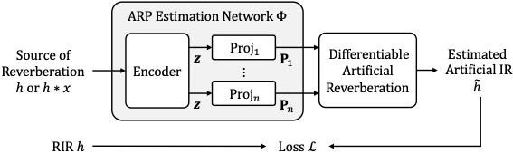

Differentiable Artificial Reverberation
Sungho Lee, Hyeong-Seok Choi, and Kyogu Lee
Music and Audio Research Group, Seoul National University, Seoul, Republic of Korea
ABSTRACT
Artificial reverberation (AR) models play a central role in various audio applications. Therefore, estimating the AR model parameters (ARPs) of a target reverberation is a crucial task. Although a few recent deep-learning-based approaches have shown promising performance, their non-end-to-end training scheme prevents them from fully exploiting the potential of deep neural networks. This motivates to introduce differentiable artificial reverberation (DAR) models which allows loss gradients to be back-propagated end-to-end. However, implementing the AR models with their difference equations "as is" in the deep-learning framework severely bottlenecks the training speed when executed with a parallel processor like GPU due to their infinite impulse response (IIR) components. We tackle this problem by replacing the IIR filters with finite impulse response (FIR) approximations with the frequency-sampling method (FSM). Using the FSM, we implement three DAR models---differentiable Filtered Velvet Noise (FVN), Advanced Filtered Velvet Noise (AFVN), and Feedback Delay Network (FDN). For each AR model, we train its ARP estimation networks for analysis-synthesis (RIR-to-ARP) and blind estimation (reverberant-speech-to-ARP) task in an end-to-end manner with its DAR model counterpart. Experiment results show that the proposed method achieves consistent performance improvement over the non-end-to-end approaches in both objective metrics and subjective listening test results.

Proposed Framework.
Audio Examples
Filtered Velvet Noise (FVN)
Advanced Filtered Velvet Noise (AFVN)
Feedback Delay Network (FDN)
DNN Decoder Baseline (DNN)